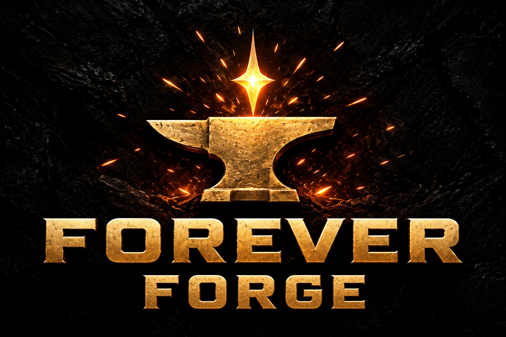
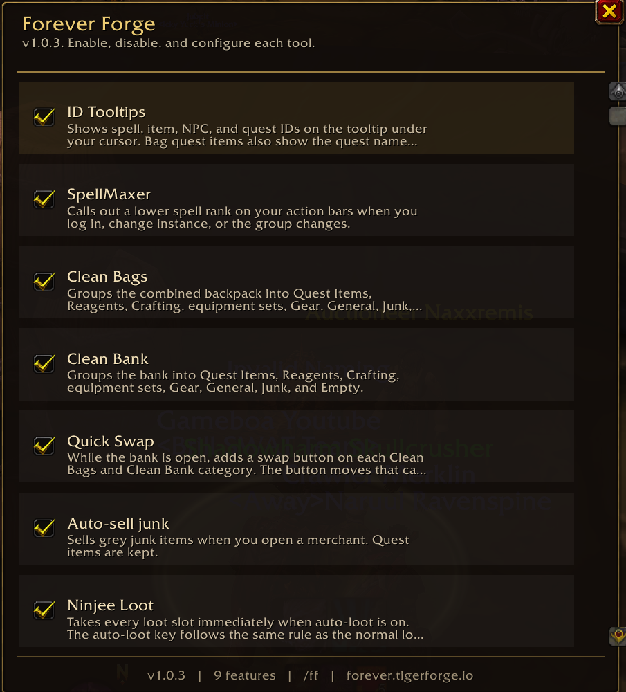
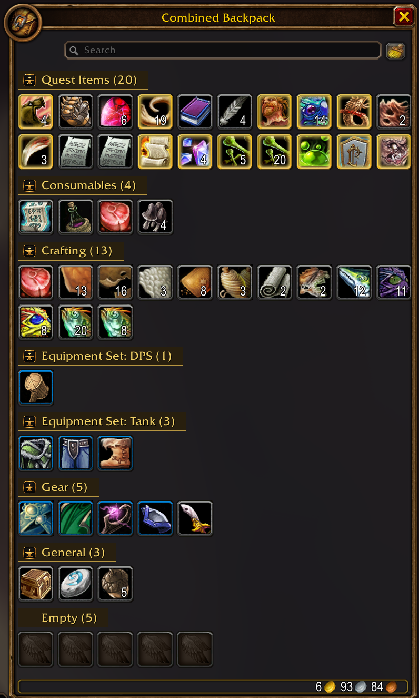
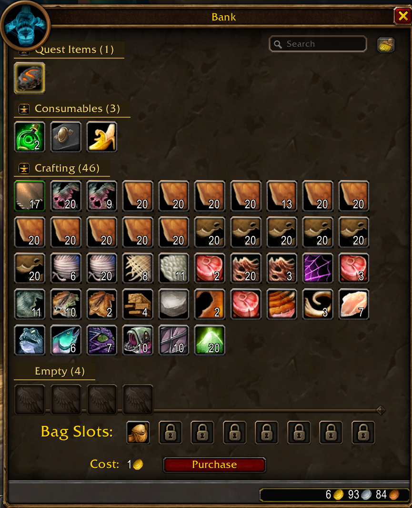
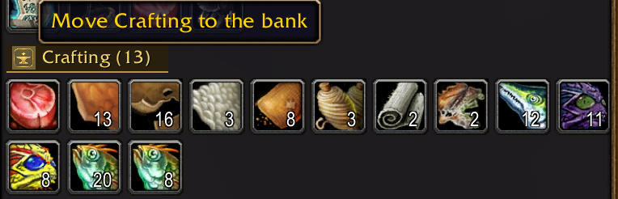
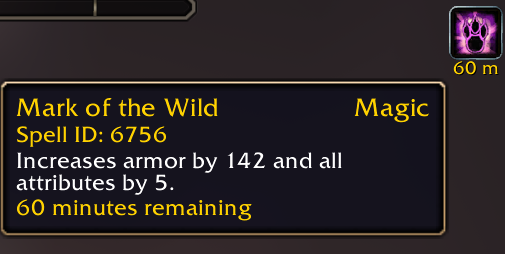
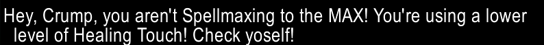

One addon of light-weight tools for WoW: Forever. Open it from the anvil on your minimap, or type /ff, /forge, or /foreverforge.
Forever Forge is free, including every future update. If you've enjoyed this addon, please leave a donation and tell your friends.
https://ko-fi.com/crumpshotEvery tool has its own switch. Turn one off and the rest keep working. Your choices are remembered. Your bags, bank, loot window, party frames, and tooltips stay the ones you already use. Forever Forge only adds the help on top.


Open your backpack and it is already sorted. Quest items, food and potions, reagents, crafting materials, saved equipment sets, gear, everyday items, junk, and empty slots each get their own labeled group, with a count on the label. You spend less time hunting and more time playing.

Your bank uses that same order, on its own switch. Find a reagent, a piece of a set, or an empty slot without scrolling through a mixed pile. The bank search box stays right where you expect it.

While the bank is open, every filled group in your bags and in the bank gets the Forever Forge button. One click sends that whole group the other way. Stock the bank, or pull a set back out, without dragging item by item. Your hearthstone stays in your bags.

Hover anything and see the ID you actually need. Spells, items, creatures, quests, buffs, and debuffs each show theirs. Quest items in your bags or bank can also name the quest they belong to.

A weaker rank left on your bars is easy to miss. SpellMaxer checks your own action bars and tells you, in your chat window: Hey, <name>, you aren't Spellmaxing to the MAX! You're using a lower level of <spell>! Check yoself!
It looks again when you log in, when you enter a new area, and when your group changes.
Open a vendor and the grey junk sells itself. Quest items stay with you. Anything a merchant will not buy stays with you. Walk away from the shop and the selling stops.
Loot the whole corpse in one go. When auto-loot is on, opening a body takes everything. Hold your auto-loot key if you want that corpse to stay a normal window. When auto-loot is off, loot stays manual until you hold the key. Bind-on-pickup questions still wait for your answer.
An enemy player steps into range, you hear a short sound, and your chat window names them: Forever Forge: Name <Guild> - 20 human mage detected!
The guild is shown when you can see it. The same person stays quiet for one minute, so a crowded road does not shout forever.
For healers, use your mouse clicks on party and raid frames to quickly cast your heals. They keep working in combat.
Your own portrait stays a normal portrait, so you can still leave the party. A plain left click still targets, and a plain right click still opens the player menu, until you decide otherwise.
Open Configure to see what each click will cast. Type a spell and press Enter to choose a different one. Leave the box empty to keep the spell already shown. Type none and press Enter to clear that click.
Forever Forge is free, including every future update. If you've enjoyed this addon, please leave a donation and tell your friends.
https://ko-fi.com/crumpshot